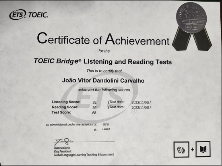

PORTFÓLIO Terceiro TRIMESTRE.
Bem vindo ao meu Portfólio
MEUS CERTIFICADOS.
Curso de CiberSegurança/Python

Curso De linux/IoT
Toeic
Olá, Me Chamo João Vitor.
Meu nome é João Vitor Dandolini Carvalho tenho 18 anos, nasci em Florianópolis(SC) cresci em Tubarão(SC), atualmente estou no terceiro ano do ensino médio do curso técnico de desenvolvimento de sistemas do Senai. Pretendo trabalhar na área do marketing Digital, como um possivel gestor de tráfego pago, e então fazer uma faculdade de administração empresarial, meu sonho atualmente é entrar na Udesc e me formar lá, tentando montar uma microempresa ou tentar o intercâmbio.
Falando mais um pouco sobre mim, gosto muito de jogos em geral, meus jogos favoritos são: Csgo e Valorant. Gosto bastante de Natação e Ciclismo, tenho 4 gatos, o Pipito, Thomas, Wiu e o Oliver, gosto muito de animes e a cultura Geek em geral, escuto um pouco de tudo, mas meus artistas favoritos são o 7 minutoz/Lucas A.R.T e o Lil nas X, sou ambivertido, converso sobre tudo sou um ótimo conselheiro e um ótimo amigo, sou aquela pessoa que você pode confiar.